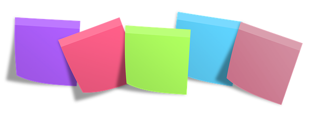

<!--The content below is only a placeholder and can be replaced.-->
<mat-toolbar color="primary">
    <span>Notas</span>
</mat-toolbar>
<div style="text-align:center">
    
</div>
<mat-accordion>
    <mat-expansion-panel>
        <mat-expansion-panel-header>
            <mat-panel-title>
                Nota
            </mat-panel-title>
            <mat-panel-description>
                Crear o editar una nota
            </mat-panel-description>
        </mat-expansion-panel-header>

        <mat-form-field>
            <input matInput placeholder="Título" [(ngModel)]="note.title">
        </mat-form-field>

        <mat-form-field>
            <mat-label>Categoría</mat-label>
            <mat-select [(ngModel)]="note.category">
                <mat-option *ngFor="let category of categories" [value]="category">
                    {{category}}
                </mat-option>
            </mat-select>
        </mat-form-field>

        <mat-form-field>
            <textarea matInput placeholder="Contenido" [(ngModel)]="note.content"></textarea>
        </mat-form-field>
        <button mat-raised-button color="primary" (click)="saveNote(note)">Guardar</button>
    </mat-expansion-panel>
</mat-accordion>
<div layout="row" layout-xs="column">
    <div *ngFor="let rNote of notes" flex>
        <mat-card class="note-cards">
            <mat-card-title>{{rNote.title}}</mat-card-title>
            <mat-card-subtitle>{{rNote.category}}</mat-card-subtitle>
            <mat-card-content>
                <p matLine class="demo-2"> {{rNote.content}} </p>
            </mat-card-content>
            <button mat-icon-button (click)="editNote(rNote)">
      <mat-icon aria-hidden="false" aria-label="edit" color="primary">edit</mat-icon>
    </button>
            <button mat-icon-button (click)="deleteNote(rNote.id)">
      <mat-icon aria-hidden="false" aria-label="delete" color="warn">delete</mat-icon>
    </button>
        </mat-card>
    </div>
</div>